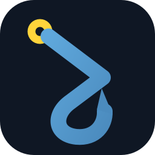

autoactivatorA shell hook that activates your Python venv the moment you cd in — and deactivates it when you leave. No config, no aliases, no per-project setup.
curl -sSL https://autoactivator.aymenkrifa.com/setup.sh | bash -s zsh
When you change directories, AutoActivator scans the current directory — and up to your home directory — for a virtual environment. Finds one? Activated. Leave the project tree? Deactivated. That's the whole contract.
deactivate.| Shell | v0.1.0 | v0.2.0 | v0.3.0 |
|---|---|---|---|
| zsh | 2.14s | 0.004s | 0.0002s |
| bash | 1.93s | 0.004s | 0.0002s |
| speedup vs previous | — | ~500× | ~20× |
Wall-clock time for the hook to fire on a single cd into a project with a .venv, cold cache, in an ubuntu:24.04 container. Reproduce with bench/bench.sh.
You need bash or zsh, git, and Linux or macOS — both covered by CI, including macOS's stock bash 3.2. No Python required.
curl -sSL https://autoactivator.aymenkrifa.com/setup.sh | bash -s zsh
curl -sSL https://autoactivator.aymenkrifa.com/setup.sh | bash -s bash
curl -sSL https://autoactivator.aymenkrifa.com/setup.sh | bash -s zsh bash
Restart your terminal — or source ~/.zshrc / source ~/.bashrc — and it's live: cd into any project with a venv and watch the prompt light up.
autoactivator update
Pulls the latest version and re-sources the hook in your current shell.
autoactivator uninstall
Removes the hook from your rc files, backing them up first — add --purge to also delete ~/.autoactivator.
Prefer to see what you're running first? Manual installation is three lines: clone, chmod, run.
The rule of thumb: if the venv directory lives anywhere inside your project, AutoActivator will find it. External venv layouts are out of scope for now.
| Tool | Default layout | Supported |
|---|---|---|
python -m venv | .venv / venv / env in project | ✓ |
virtualenv | env in project | ✓ |
uv venv | .venv in project | ✓ |
poetry (virtualenvs.in-project = true) | .venv in project | ✓ |
pipenv (PIPENV_VENV_IN_PROJECT=1) | .venv in project | ✓ |
| Custom-named directory | any name, via $AUTOACTIVATOR_VENV_NAME | ✓ |
poetry / pipenv (defaults) | venv outside the project | ✗ |
pyenv-virtualenv, hatch | venv outside the project | ✗ |
| Conda / Miniconda | $CONDA_PREFIX/envs/… | ✗ |
First match wins, in this order:
$AUTOACTIVATOR_VENV_NAME→
.venv→
venv→
env→
virtualenv→
first venv-looking directory (alphabetical)
Add this before the AutoActivator block in your shell config:
export AUTOACTIVATOR_VENV_NAME=myenv
If the named directory doesn't exist in a project, the standard priority list applies — the override is a preference, not a hard requirement.
Activating a venv means source-ing its bin/activate — so cd-ing into an untrusted checkout executes whatever shell code its venv-shaped directories contain. If you routinely clone code you don't trust, inspect it before cd-ing in. (Tools like direnv address this with a per-directory allow-list; AutoActivator deliberately stays zero-config.)